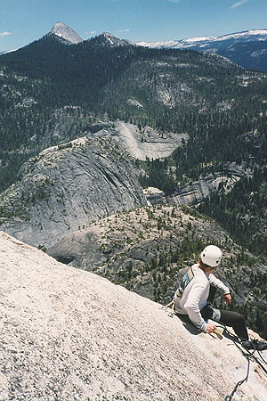
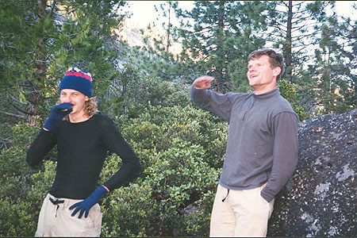
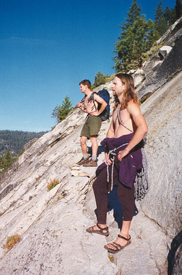
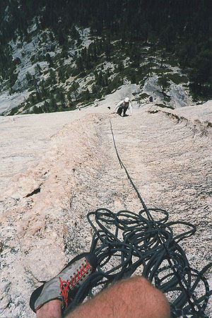
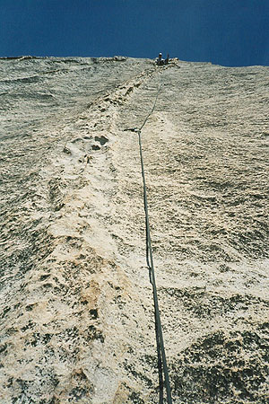
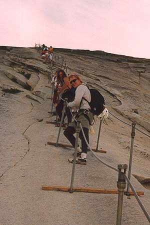

Half Dome "Snake Dike"
- The Snake Dike (5.7, III)
- June 18-19, 1999
Still dirty and tired from the Nutcracker, we raided the supply shop, and fumbled for bivy gear in Jeff’s tent. Two older men needed a place to sleep that night, so Jeff kindly offered the tent since we’d be away.
And so it was that before we even got a chance to gloat over the Nutcracker, we were chasing the park bus with heavy packs over one shoulder. Tourists eyed us nervously - we talked too loud, had packs too big, smelled too bad, and Tom had hair too long.






As night fell, we got off at the last stop, walking a mile further to the trailhead. There had been no time to secure permits, so we were especially nervous as we passed a nighttime gathering of park rangers. We couldn’t very well say we were out for a walk, but if they had their suspicions, they kept them to themselves. Once off the road, we felt safe, coccooned in dark trees, with a rushing river on the right. Scott had hiked almost every trail in the park in the previous weeks, and he led us ably in the dark. I have no idea where we were, but we crossed bridges, and I know we took a long way around the famous Mist Trail because it was too dark and wet there. I barely kept up with the stiff pace set by my three companions. I certainly envied their lifestyles of climbing all summer. Totally maxed out, I followed for hours with tenacity even I didn’t understand.
We pulled out of the trees and traversed a ledge of moonlit granite. Dripping with sweat, we’d removed our shirts long before, and I remember the shock of a cool breeze as I looked up on a beautiful scene: Half Dome glowing quietly across the valley, the full moon and twinkling stars illuminating a moonscape of granite, the rushing of a tremendous waterfall ahead. With new energy, we turned off the headlamps, and bounded toward the falls. The country had surprised us, and we slowed down, talking about Muir and what he had done here. Crossing the falls on a bridge, we found a campsite further up the trail. I don’t remember what Jeff and I had brought for dinner, because Scott and Tom completely overwhelmed us with a fantastic meal of hot pasta, olive oil, fresh garlic, cheese and picante sauce! As the midnight air chilled us, we greedily shared a bowl of this stuff. It was soo good!
To save space, I had forgone bringing a sleeping bag, but I had a ground pad and my bivy sack. That would have been fine in the valley, but even 2000 feet up, it was too cold. I took our climbing rope and rope bag into the bivy sack, trying to make do. It was a long, long cold night, and I was not unhappy to see the dawn. It seemed 10 years before that we had waited to climb the Nutcracker, but we had just entered another stage of that continuous adventure. Worried about weekend crowds, we had to hurry to the base of our climb, Snake Dike, before the ever-present teeming hordes.
Warming up, we followed a faint path over a granite shoulder of Little Yosemite. Jeff lead the way down, half skiing on the steep rock, and we entered a pleasant meadow/pond fringed by forest. The bright granite of our mountain contrasted with deep green reeds, and blue sky. We found our way across and made our way up the lower rocks of the mountain. Soon we traversed an exciting ledge above the meadow, getting a taste of the climbing to come. The base of the route was still in shade, but the hordes had beat us! There were at least 8 climbers waiting for their turn on the climb. These people had apparently camped near us, but stole away earlier in the morning. But they were friendly, and together we watched climbers make their way up, up and out of sight as they passed the horizon of the huge granite dome.
Today, Jeff and I preceded Tom and Scott. Jeff led the first pitch, characterized by a very thin traverse under a roof, then an easy bit above the roof to a bolted belay station. Jeff had placed some gear on the traverse, but it fell out, so I had the fear of a pendulum fall to keep me focused! It was interesting, because there were only very small bumps for your feet, and the hands made do with an insecure undercling for the tips of the fingers. At the end, there was a Thank God hold, and I levered up, aware of the watching crowd below.
I took the next lead, a frictiony traverse to another bolted belay. I think there was one bolt, and I got a nut in, but it wasn’t good at all. Tom later complimented me on this lead - the lack of protection made it easy to get psyched out. But I was calm and very focused, a feeling I would enjoy on all the leads, characterized by straightforward (okay, easy!) climbing and very little protection. One pitch high on the route had only one bolt for a full rope length, and the bolt wasn’t even in the middle, but just below the belay station! I was very curious as to if I would get “psyched out” on this, but my actual feeling was that I didn’t want it to end. We continued this way for 10 excellent pitches. We had a humorous moment when worked on a very frictiony traverse, making for a broken dike in the rock 12 feet away and above. It was a hard move to face with no protection above the belay station. On such a big granite face, you can be 10 feet from a bolt, look right at it, and not even see it - it looks like the glint of a crystal in the rock. I noticed the bolt, within easy reach of his hand, and he was so happy to see it, he kissed it like a man at sea too long. My hearty laughter at his expense broke the tension! (I shudder to think how the Jeff will pay me back!)
But we were at sea, and finally the climbing eased off, and we began wading to dry land. Jeff towed the rope behind him and tried, despite my best efforts, to keep two or three pieces of gear in at little broken areas of rock. The rope drag was heavy, and finally he stopped and we napped on a shady ledge. We were waiting for Scott and Tom, who we’d last seen hundreds of feet below. Dreaming of walking through a moonlit forest, I awoke, and we continued on, figuring we’d meet them at the summit.
And the summit came into view across a flat, broken landscape. Reaching it, we gravitated to the cliff that looks down into the valley. We took many pictures, and met Stefan, a German tour operator on his day off from shuttling tired Deutsche across the west. We got him to sit with us and dangle his feet over the edge: 3000 feet straight down.
Finally Scott and Tom arrived, they had taken a wrong turn near the top of the climb, getting into evil terrain, but living to tell about it. A pair of climbers crawled over the lip of the sheer cliff after two solid days of climbing and hauling their gear.
We talked a while, then headed down the traditional “cables” route. All the hikers wore stout fabric gloves they had picked up below the rusty steel cables. Not prepared in this fashion, we lowered ourselves with our already tender hands. Then we hiked for miles, Jeff in the lead with a patented trail-skiing technique. Once in the trees, and caught behind a pack of dawdling kids, we hopped by on rocks beside the trail. Scott and I had discovered we were both fans of LaTeX: extremely powerful but arcane text processing software. Suddenly Jeff crumpled awkwardly then immediately hopped up again, now limping profoundly. With a queasy grin, he admitted he had twisted his ankle, probably badly. Later, we stopped at a stream. Daring to remove his boot, he showed us a badly swollen ankle. OUCH! We kept moving though, because there were miles to go. Packing up our camp, we continued down to the famous Mist Trail. Jeff led the way despite the injury, and soon we were soaked to the skin from the freezing spray of a 400 foot waterfall in a ridiculously green gorge. I screamed each time the freezing mist washed over me, and soon we escaped, laughing from the cold shock.
I had promised to buy pizza for us all, so the fast walk turned into a run. Lungs bursting, gear jangling, we made it to the stone bridge to catch the last bus of the night. Hot pizza and dark ale fueled our tales and numbed stiffening limbs. I stumbled to the phone booth outside camp IV and babbled happily to Kris about the adventure. When I slept, I’m sure I was smiling!